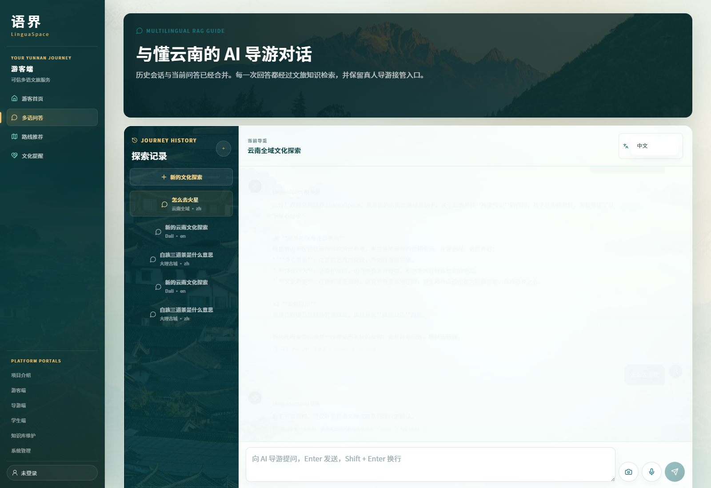
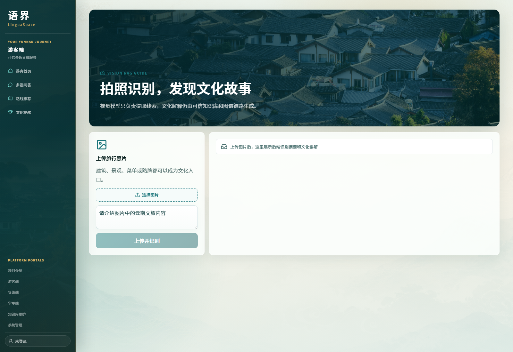
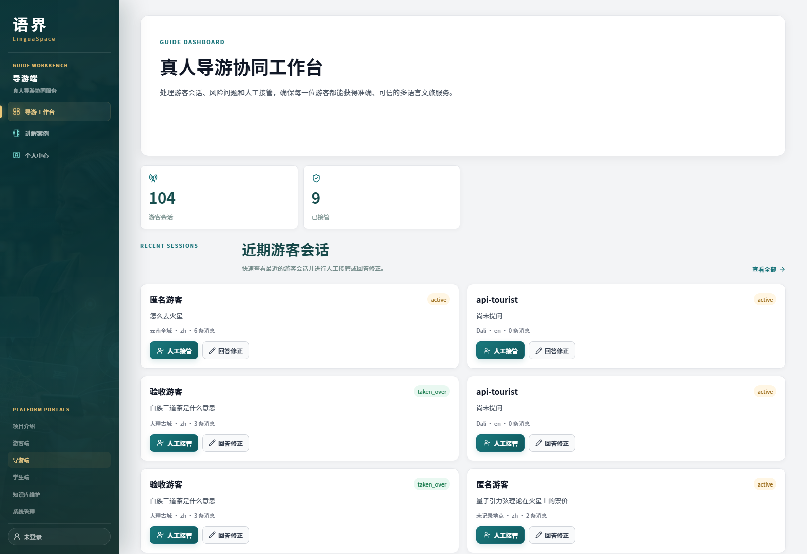
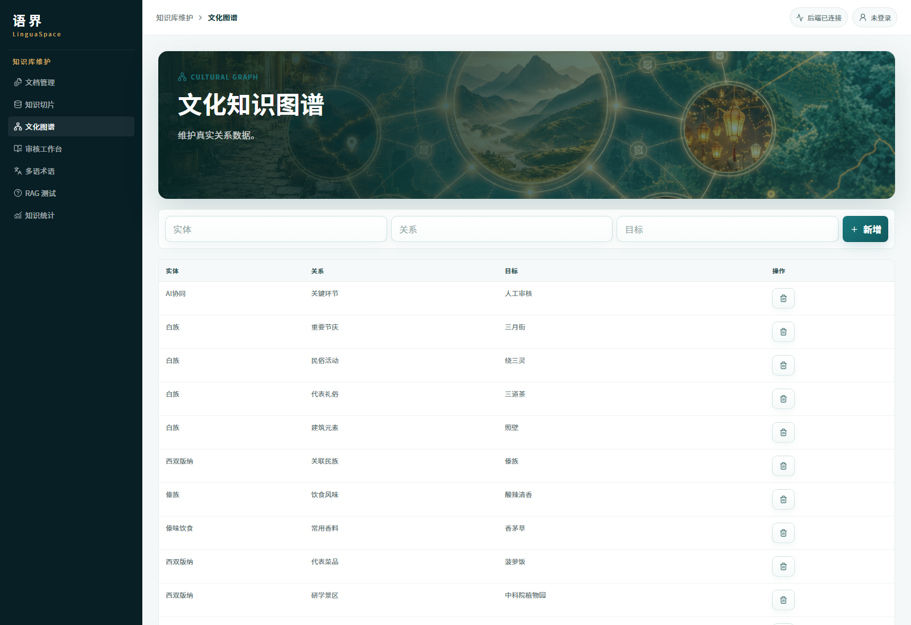
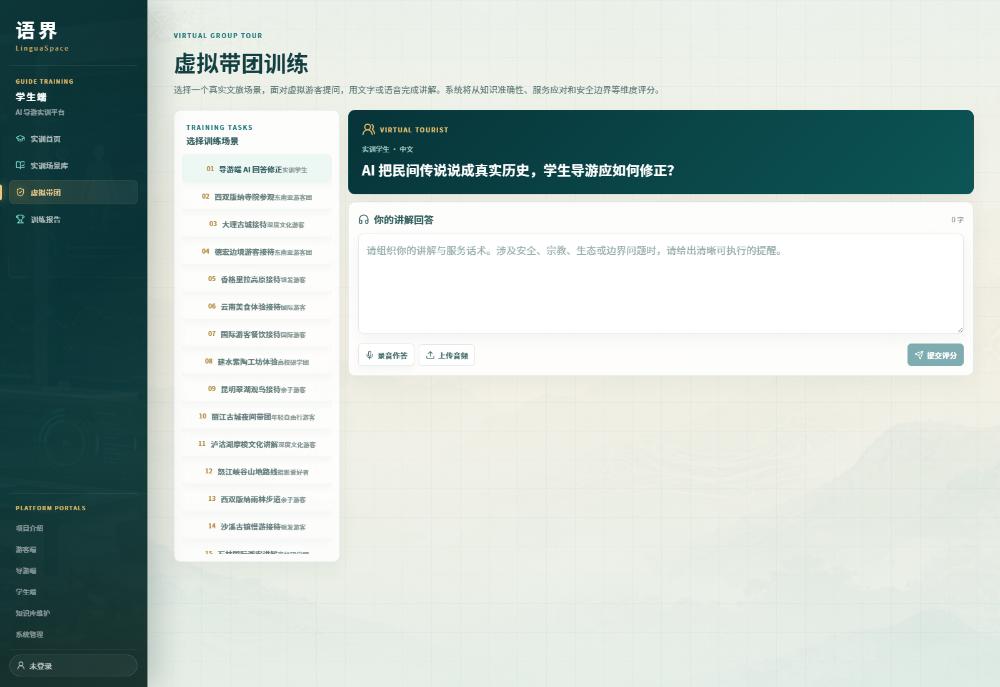
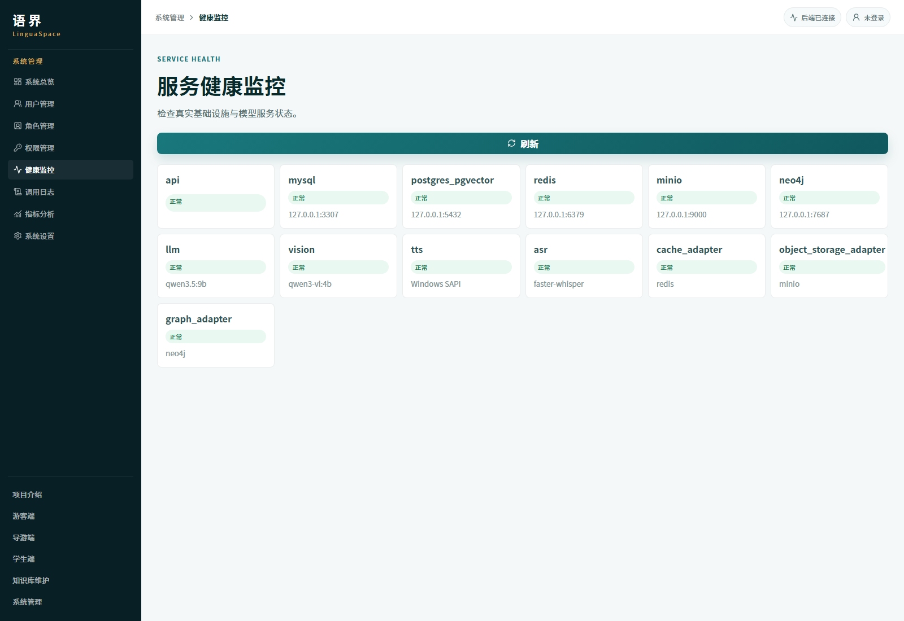

1跨语言现场服务不足
云南文旅面向南亚、东南亚游客时，语言、文化礼仪和即时咨询都需要更稳定的数字导览能力。
云南文旅面向南亚、东南亚游客时，语言、文化礼仪和即时咨询都需要更稳定的数字导览能力。
景点历史、民族文化、宗教礼仪和非遗内容必须依赖可信知识库，不能把大模型自由发挥当作答案。
高风险、安全、投诉和深度文化问题需要导游接管、修正和审核回流，形成服务闭环。
高校导游人才培养需要虚拟游客、语音讲解、评分报告和知识覆盖反馈，而不是一次性课堂练习。
用文字、语音、图片提问，获得基于云南文旅知识库和文化图谱的多语回答。
导游查看会话、接管 AI 对话、提交回答修正，让复杂问题进入人工服务闭环。
面对虚拟游客完成讲解，系统结合知识覆盖、表达质量和模型评分生成训练反馈。
维护知识文档、术语、图谱和审核任务，并查看健康检查、请求链路与模型日志。
聊天、语音、图片识别和路线推荐统一进入可信问答链路，输出回答、来源数和可靠性状态。
TouristChatPage.tsx / /api/chat/stream / /api/image/ask / /api/audio/*
会话列表、人工接管、导游回复、修正与案例库。
GuidePages.tsx / /api/collaboration/*训练场景、语音转写、评分报告和历史记录。
StudentPages.tsx / backend/app/scoring.py文档上传、切片、审核、术语、图谱和 RAG 测试。
KnowledgePages.tsx / /api/knowledge/*用户权限、健康检查、日志指标，以及 Loading / Empty / Error 兜底。
SystemPages.tsx / components/common/*游客文字、语音、图片提问；导游接管会话；学员进入训练场景。
React Router 分发游客端、导游端、学员端和知识管理端页面。
chat、image、audio、training、knowledge 等接口统一接入业务链路。
术语归一、知识检索、图谱关系补充，再调用文本、视觉和语音模型。
按来源和可靠性阈值输出答案，低可信问题进入兜底、接管和审核回流。

历史会话、语言切换、图片/语音入口和人工导游申请。

上传图片后由视觉模型提取线索，再进入可信文化讲解。

近期游客会话、接管入口和回答修正入口集中展示。

真实三元组派生节点和关系，用于补充文化关联解释。

虚拟游客提问、语音回答、多维评分和改进建议。

API、数据库、缓存、对象存储、图谱和模型服务状态。